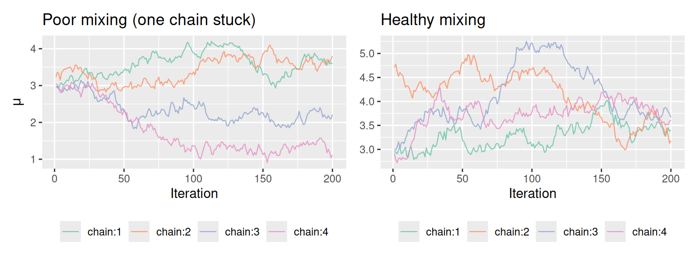

flowchart TD
A("📄 Your .stan file"):::user
B("🔧 stanc\nStan → C++"):::tool
C("📝 generated .cpp"):::artifact
D("⚙️ C++ compiler\ng++ / clang++"):::tool
E("💾 compiled binary\n.exe / .out"):::artifact
F("📦 cmdstanr\ncalls the binary,\npasses your data"):::tool
G("📊 posterior samples\nin R"):::result
A --> B --> C --> D --> E --> F --> G
classDef user fill:#e8f4f2,stroke:#2e7d6a,color:#1a2e28
classDef tool fill:#2e7d6a,stroke:#1a4a40,color:#ffffff
classDef artifact fill:#f0f5f4,stroke:#5c8a52,color:#1a2e28
classDef result fill:#5c8a52,stroke:#3a6035,color:#ffffff
2 Setting Up Your Environment
2.1 Overview
Before you can write a Stan model, you need a working toolchain: a C++ compiler, CmdStan itself, and the R interface cmdstanr. This chapter walks through every step, shows you how to verify that each piece is working, and ends with a complete first Stan program that you compile and run yourself.
If you hit a problem, the troubleshooting section at the end of this chapter covers the most common installation failures by operating system.
2.2 Learning objectives
By the end of this chapter you will be able to:
- Install CmdStan and cmdstanr on your machine and verify the toolchain.
- Describe the structure of a
.stanfile (the six named blocks). - Compile and sample from a minimal Stan program using
cmdstanr. - Read and interpret the summary output of a fitted Stan model.
2.3 The toolchain: what you are installing
Stan models are written in the Stan language, but they are compiled to C++ before sampling. This means you need:
-
A C++ compiler: the Stan compiler (
stanc) translates.stan=>.cpp; your system compiler then builds a fast binary. - CmdStan: the command-line Stan interface; the actual sampler lives here.
- cmdstanr: an R package that calls CmdStan from R, passes your data, and returns results as tidy R objects.
Why cmdstanr, not rstan?
Two R interfaces exist for Stan: rstan (the original) and cmdstanr (the newer, recommended one). This handbook uses cmdstanr throughout because it tracks CmdStan releases closely, has a cleaner API, and avoids the compilation overhead that can make rstan slow to load. If you already use rstan, the Stan code in this handbook is identical, only the R calls differ.
2.4 Step 1: Install a C++ compiler
2.4.1 Windows
Install Rtools for your R version from https://cran.r-project.org/bin/windows/Rtools/. Accept all defaults. Rtools provides the g++ compiler that Stan needs.
After installation, verify in R:
pkgbuild::has_build_tools(debug = TRUE)You should see TRUE. If not, restart R and try again.
2.4.2 macOS
You need the Xcode Command Line Tools, which provide the clang++ compiler:
xcode-select --installA dialog will appear; click Install. After it completes, verify:
clang++ --versionIf you see a version string (e.g., Apple clang version 15.0.0), you are ready. On Apple Silicon (M1/M2/M3), this is sufficient and no additional steps are needed.
2.4.3 Linux
Most Linux distributions ship with g++. Check:
g++ --versionIf the command is not found, install the build tools:
# Debian / Ubuntu
sudo apt-get install build-essential
# Fedora / RHEL
sudo dnf groupinstall "Development Tools"2.5 Step 2: Install cmdstanr
cmdstanr is not yet on CRAN; install it from the Stan R-universe:
install.packages(
"cmdstanr",
repos = c("https://stan-dev.r-universe.dev", getOption("repos"))
)Load it and check that R can see it:
library(cmdstanr)
cmdstanr:::check_cmdstan_toolchain()If the toolchain check passes, you will see a message like:
The C++ toolchain required for CmdStan is setup properly!If it fails, revisit Step 1 and consult the troubleshooting section below.
2.6 Step 3: Install CmdStan
With cmdstanr loaded, installing CmdStan is a single R call:
install_cmdstan(cores = 2) # increase cores to speed up compilationThis downloads and compiles CmdStan. It takes 5–15 minutes on the first install. You only need to do this once (and again when you want to upgrade).
install_cmdstan() stores CmdStan in ~/.cmdstan/ by default. You can check and change this path with cmdstan_path() and the CMDSTAN environment variable in .Renviron.
Verify the installation:
You should see something like "2.35.0". Record this version — you will want it for the methods section of any paper you write.
2.7 Step 4: Install companion R packages
The rest of the handbook uses these packages for working with and visualising Stan output. Install them all now:
install.packages(c(
"posterior", # working with posterior draws
"bayesplot", # MCMC diagnostics and posterior plots
"loo", # leave-one-out cross-validation
"ggplot2", # all other plots
"dplyr", # data wrangling
"tidyr", # reshaping
"patchwork" # combining plots
))2.8 The anatomy of a Stan program
Every Stan program is divided into named blocks. Not all blocks are required, but they must appear in this fixed order when present:
functions {
// (optional) user-defined functions
}
data {
// variables read from R
}
transformed data {
// (optional) deterministic functions of the data
}
parameters {
// unknowns to be sampled
}
transformed parameters {
// (optional) deterministic functions of parameters
}
model {
// priors and likelihood, the log posterior
}
generated quantities {
// (optional) predictions, log-likelihoods, derived quantities
}In practice, you will use data, parameters, and model in nearly every program. The other blocks appear as models grow in complexity.
Table 2.1 summarises each block’s role.
| Block | Required | Purpose |
|---|---|---|
functions |
No | Define helper functions reused elsewhere |
data |
Yes | Declare inputs passed from R |
transformed data |
No | Pre-compute fixed quantities from data |
parameters |
Yes | Declare the unknowns Stan samples |
transformed parameters |
No | Derived quantities that are also saved |
model |
Yes | Log-prior + log-likelihood contributions |
generated quantities |
No | Posterior predictions, LOO log-likelihoods |
Order matters. Stan enforces that blocks appear in the order shown above. A common beginner mistake is writing model before parameters, in such case Stan will refuse to compile the program.
2.9 Your first Stan program
Let us write, compile, and run a complete Stan program. The model is simple: we observe \(N\) measurements drawn from a normal distribution, and we want to learn the mean \(\mu\) and standard deviation \(\sigma\).
\[ y_i \sim \text{Normal}(\mu,\, \sigma), \quad i = 1, \ldots, N \]
2.9.1 Write the Stan file
Create a file called normal_model.stan in your working directory with the following content. (In RStudio: File => New File => Stan File.)
// normal_model.stan
// Estimate the mean and SD of a normal distribution.
data {
int<lower=1> N; // number of observations; must be at least 1
vector[N] y; // the observations
}
parameters {
real mu; // population mean (unconstrained)
real<lower=0> sigma; // population SD (must be positive)
}
model {
// Priors
mu ~ normal(0, 10); // weakly informative
sigma ~ exponential(1); // puts mass on moderate values
// Likelihood
y ~ normal(mu, sigma);
}
generated quantities {
// Posterior predictive draw for one new observation
real y_rep = normal_rng(mu, sigma);
}2.9.2 Compile the model
In R, point cmdstanr at the file:
library(cmdstanr)
mod <- cmdstan_model("normal_model.stan")Compilation happens once and is cached. You will see a progress message; when it finishes, mod is a CmdStanModel object.
mod # print a summaryCmdStanModel: normal_model
stan_file: normal_model.stan
exe_file: normal_model
...2.9.3 Prepare the data
Stan’s data block expects an R list whose names exactly match the variable names in the block:
2.9.4 Sample from the posterior
fit <- mod$sample(
data = stan_data,
seed = 2025,
chains = 4, # run 4 independent Markov chains
parallel_chains = 4, # use 4 CPU cores (adjust to your machine)
iter_warmup = 1000,
iter_sampling = 1000,
refresh = 500 # print progress every 500 iterations
)You will see output like:
Running MCMC with 4 parallel chains...
Chain 1 Iteration: 1 / 2000 [ 0%] (Warmup)
Chain 1 Iteration: 500 / 2000 [ 25%] (Warmup)
Chain 1 Iteration: 1000 / 2000 [ 50%] (Warmup)
Chain 1 Iteration: 1001 / 2000 [ 50%] (Sampling)
Chain 1 Iteration: 1500 / 2000 [ 75%] (Sampling)
Chain 1 Iteration: 2000 / 2000 [100%] (Sampling)
Chain 1 finished in 0.1 seconds.
...
All 4 chains finished successfully.
Mean chain execution time: 0.1 seconds.
Total execution time: 0.2 seconds.2.9.5 Read the output
fit$summary()# A tibble: 3 × 10
variable mean median sd mad q5 q95 rhat ess_bulk ess_tail
<chr> <dbl> <dbl> <dbl> <dbl> <dbl> <dbl> <dbl> <dbl> <dbl>
1 lp__ -86.5 -86.2 1.01 0.726 -88.4 -85.5 1.00 1671. 2332.
2 mu 3.06 3.06 0.214 0.212 2.71 3.41 1.00 3682. 2871.
3 sigma 1.50 1.49 0.153 0.152 1.26 1.77 1.00 3745. 2901.Read this table as follows:
-
mean/median: posterior mean and median for each parameter. Here \(\hat{\mu} \approx 3.06\) and \(\hat{\sigma} \approx 1.50\) which are close to the true values of 3 and 1.5. -
sd: posterior standard deviation (the Bayesian analogue of a standard error). -
q5/q95: the 90% credible interval. We are 90% confident that \(\mu\) lies between 2.71 and 3.41. -
rhat: the \(\hat{R}\) convergence diagnostic. Values close to 1.00 (below 1.01) indicate that all chains agree, the sampler has converged. -
ess_bulk/ess_tail: effective sample sizes. Values above ~400 are generally adequate; higher is better.
The lp__ row is the log posterior density evaluated at each draw. It is computed automatically and is useful for diagnosing problems, but you do not interpret it as a parameter.
2.10 A first look at diagnostics
Even at this early stage, it is good practice to look at the trace plots that shows the visual records of each chain’s journey through parameter space:
library(bayesplot)
fit$draws() |>
mcmc_trace(pars = c("mu", "sigma"))Well-mixed chains look like “fuzzy caterpillars”: each chain explores the same region, with no trends, drift, or sticking (Figure 2.2).

We will return to diagnostics in depth in Section 2.8 and throughout Part V. For now, if your trace plots look like the left panel and rhat is below 1.01, your model has sampled successfully.
2.11 Saving and reloading a fit
Stan fits can take time. Save them so you do not need to refit:
fit$save_object("normal_model_fit.rds")
# In a new R session:
fit <- readRDS("normal_model_fit.rds")2.12 Troubleshooting
2.12.1 “C++ compiler not found” (Windows)
Rtools is not on the PATH. Run this in R and then restart:
pkgbuild::find_rtools(debug = TRUE)If it cannot find Rtools, reinstall from https://cran.r-project.org/bin/windows/Rtools/ and ensure “Add Rtools to system PATH” is checked.
2.12.2 “Error: ‘make’ not found” (macOS)
The Xcode Command Line Tools are missing or need updating:
xcode-select --install
# or, if already installed but broken:
sudo xcode-select --reset2.12.3 Compilation succeeds but sampling is very slow
Set parallel_chains to the number of physical cores on your machine. Find this in R with:
parallel::detectCores(logical = FALSE)2.12.4 “Initialization between (-2, 2) failed after 100 attempts”
Stan initialises parameters randomly in the range (-2, 2) on the unconstrained scale. This error means the model’s log posterior could not be evaluated at any of these starting points. This is usually a sign of a mis-specified model or data-block mismatch. Double-check that your stan_data list names exactly match the data block variable names, and that dimensions are correct.
2.12.5 rhat is above 1.01 or chains look like the right panel in Figure 2.2
Convergence failure. Common causes: too few warmup iterations, a poorly specified model, or high posterior correlation between parameters. Try iter_warmup = 2000 first. We discuss deeper fixes in ?sec-debugging.
2.13 Summary
- Stan requires a C++ compiler, CmdStan, and the cmdstanr R package. Install them once with
install_cmdstan()and they are ready for all future work. - Every Stan program has up to seven named blocks in a fixed order:
functions,data,transformed data,parameters,transformed parameters,model,generated quantities. The three essential ones aredata,parameters, andmodel. - The workflow is: write a
.stanfile → compile withcmdstan_model()→ pass data as a named R list → call$sample()→ inspect with$summary(). - Always check
rhat(target: < 1.01) and trace plots before interpreting results. A fuzzy-caterpillar trace is a healthy trace.
2.14 Exercises
-
Verify your installation. Run the following and paste the output into a text file to keep as a record of your environment:
cmdstan_version() packageVersion("cmdstanr") packageVersion("posterior") R.version.string Run the normal model. Copy
normal_model.stanfrom this chapter, compile it, generate 100 observations fromrnorm(100, mean = 5, sd = 2), and fit the model. Does$summary()recover the true parameters? What happens to the width of the credible intervals if you reduce \(N\) to 10?Experiment with priors. Change the prior on
mufromnormal(0, 10)tonormal(0, 0.1)(a very tight prior centred at zero) and refit with the same data. How does the posterior formuchange? What does this tell you about the influence of the prior relative to the data?Inspect the
generated quantitiesblock. The model includesy_rep = normal_rng(mu, sigma). Extract this quantity withfit$draws("y_rep")and plot a histogram. What distribution does it approximate, and why?
2.15 Further reading
- cmdstanr documentation: https://mc-stan.org/cmdstanr/
- Stan installation guide (all platforms): https://mc-stan.org/docs/cmdstan-guide/installation.html
- Carpenter et al. (2017), the primary Stan reference; cite this in any publication that uses Stan models.
-
Betancourt (2017, sec. 2), brief, accessible description of HMC warmup and why it matters for setting
iter_warmup.